Capacità di rispondere a marchi diversi
Concentrandoci su borse e piccola pelletteria, abbiamo costruito partnership di lungo periodo con oltre 15 marchi di eccellenza in Giappone e all'estero.
BUSINESSMANUFACTURING ── VALUE UP
Da una piccola officina artigianale a un marchio globale. Abbiamo rilevato un laboratorio di pelletteria fondato nel 1966,
unendo 60 anni di maestria artigianale alla forza commerciale e all'infrastruttura digitale di B supply.
Nel 1966, in un quartiere popolare di Tokyo, nacque un piccolo laboratorio di pelletteria.
Da allora, per 60 anni, le mani degli artigiani non hanno mai smesso di lavorare.
La tecnica affinata da quelle mani, e la passione che vi risiede...
Noi la tramandiamo verso la prossima era.
Fondazione a Sumida, Tokyo. Avvio della produzione conto terzi di articoli in pelle.
Per 60 anni, produzione ininterrotta di articoli in pelle (borse, portafogli, ecc.) per marchi di eccellenza.
B supply Inc. rileva l'attività, unendo 60 anni di maestria artigianale alla forza commerciale e all'infrastruttura digitale.
Per 60 anni, senza interruzioni, siamo stati scelti da marchi di eccellenza.
Tutti i nostri prodotti sono realizzati interamente in Giappone.
03SIX REASONS
Concentrandoci su borse e piccola pelletteria, abbiamo costruito partnership di lungo periodo con oltre 15 marchi di eccellenza in Giappone e all'estero.
Lavoriamo una vasta gamma di materiali: pelle bovina (vitello, cuoio naturale, stampata), pelle di pecora, pelle di capra, pelle di cervo, coccodrillo, pitone, pelle di cavallo (cordovan), pelle di maiale e pelli esotiche.
Tutti i prodotti sono realizzati in Giappone, senza alcuna produzione all'estero. Dal taglio alla rifinitura, ogni fase viene svolta integralmente nel nostro laboratorio nazionale.
Applichiamo un controllo qualità rigoroso su ogni singolo pezzo, mantenendo standard qualitativi costanti.
La produzione è affidata ad artigiani con esperienza maturata in Giappone, che mettono a frutto tecnica e sensibilità sviluppate nel tempo per garantire una manifattura affidabile.
Lo stesso team di artigiani e un referente commerciale dedicato seguono continuativamente ogni cliente, sostenendo relazioni commerciali di lungo periodo attraverso un servizio attento.
04EQUIPMENT
Tutte le fasi produttive si svolgono nel nostro laboratorio nazionale a Sumida, Tokyo. Un team polivalente altamente qualificato, dal taglio alla cucitura fino alla rifinitura, è in grado di rispondere anche a specifiche complesse e design di alta difficoltà.
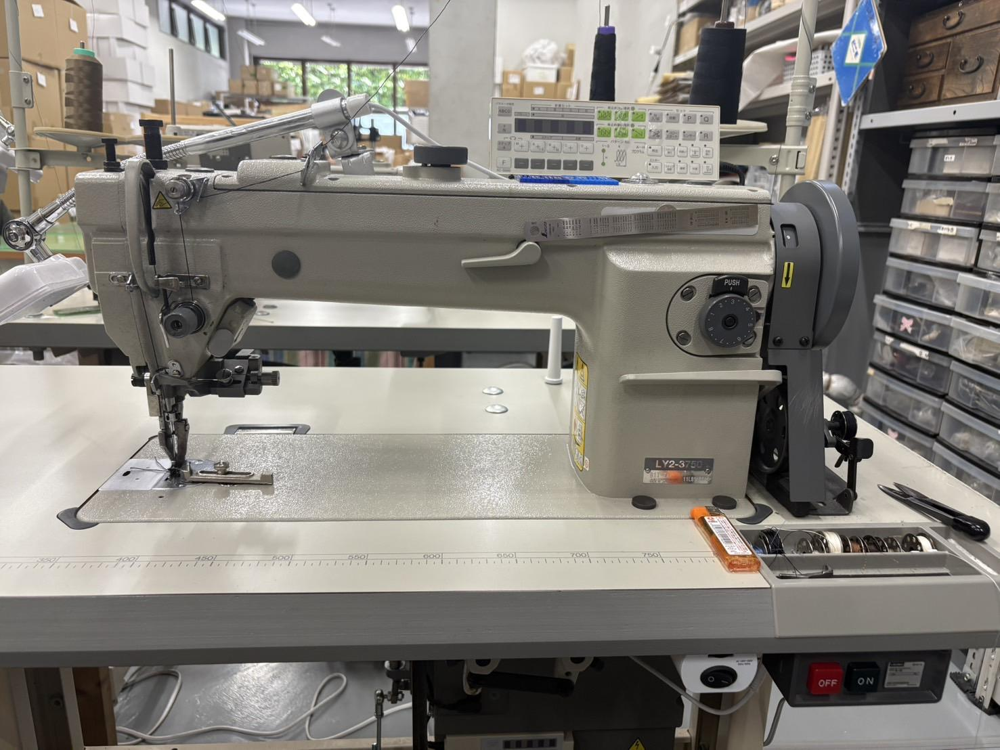
01Macchina principale per la cucitura di pelle e materiali spessi. Cucitura rettilinea stabile.
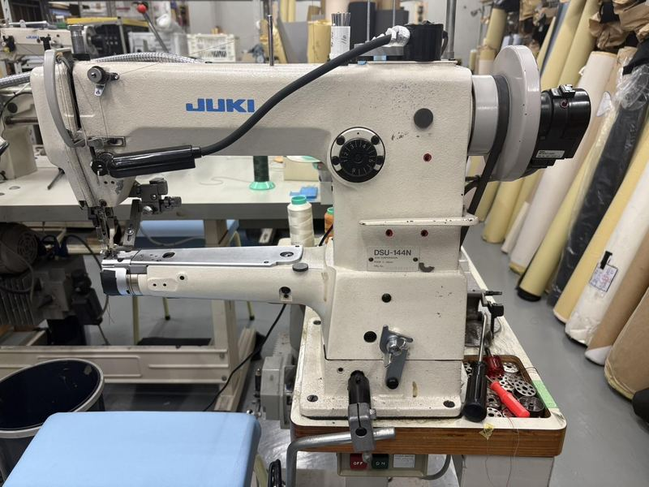
02Per borse e prodotti tubolari, cuciture tridimensionali.
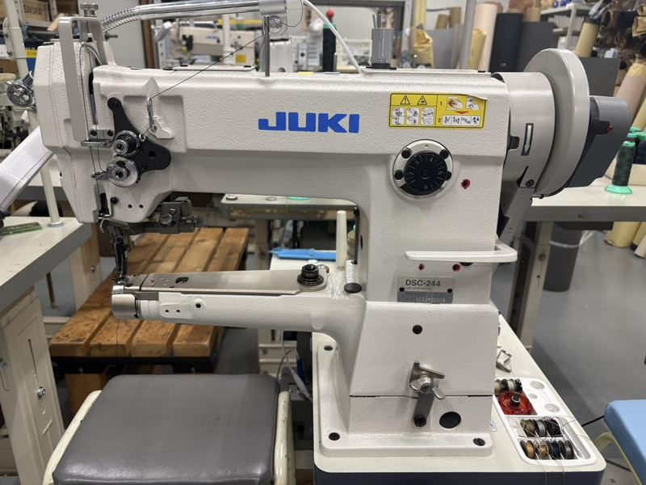
03Meccanismo di trasporto integrato. Cucitura stabile anche su pelli spesse.
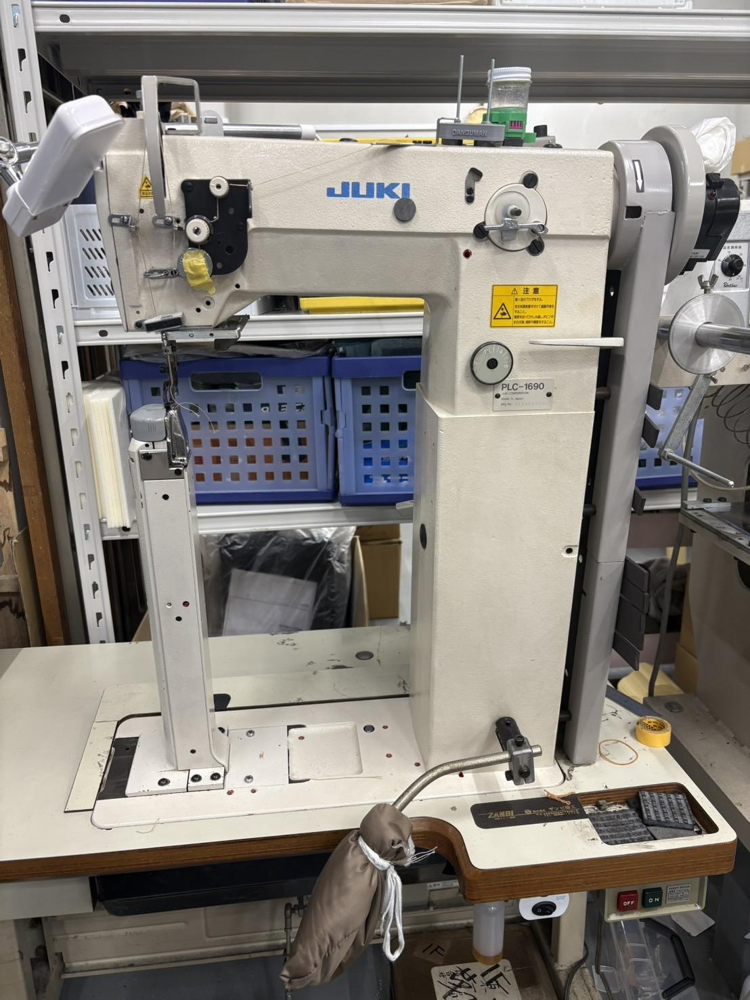
04Base a colonna per la cucitura tridimensionale di superfici curve come fondi e fianchi.
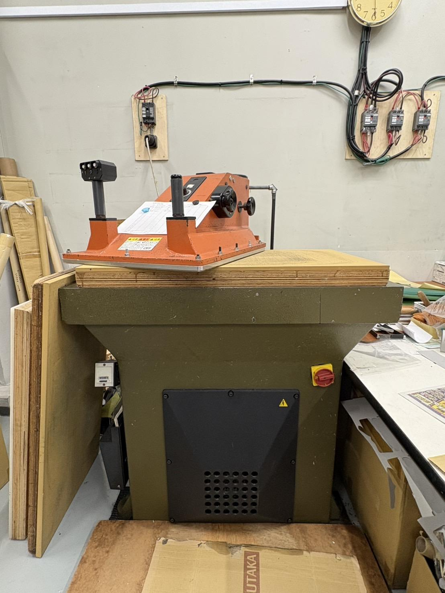
05Macchina standard del settore, ideale per il taglio di componenti di grandi dimensioni.
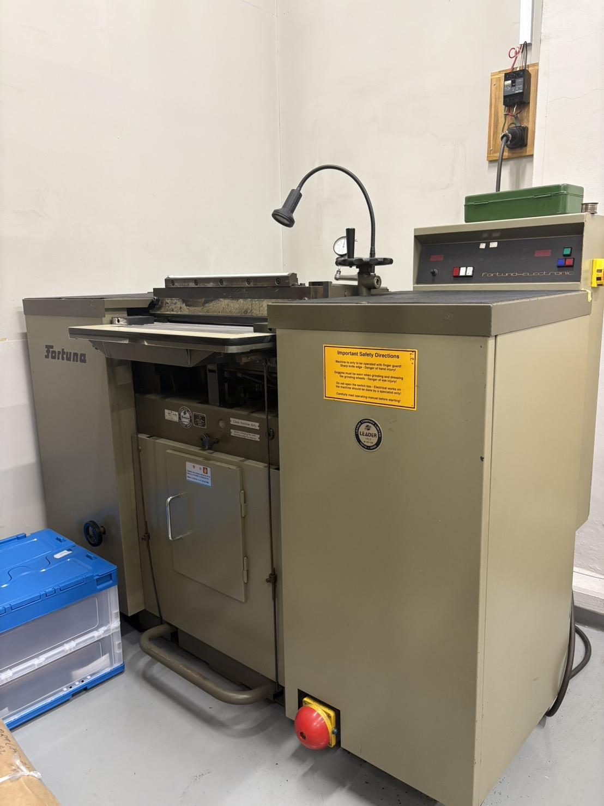
06Assottiglia in modo uniforme la pelle spessa allo spessore desiderato.
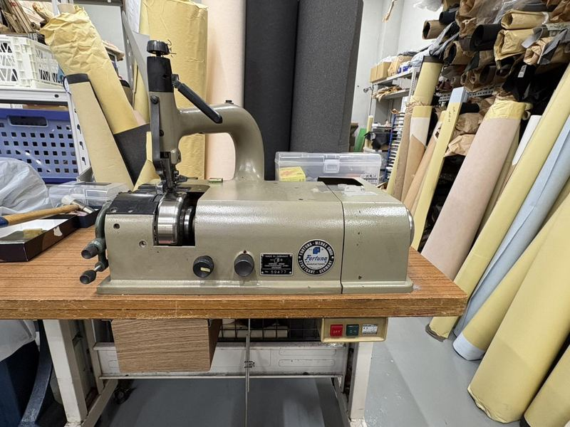
07Assottiglia i bordi della pelle in modo uniforme: una lavorazione preparatoria decisiva per la qualità finale.
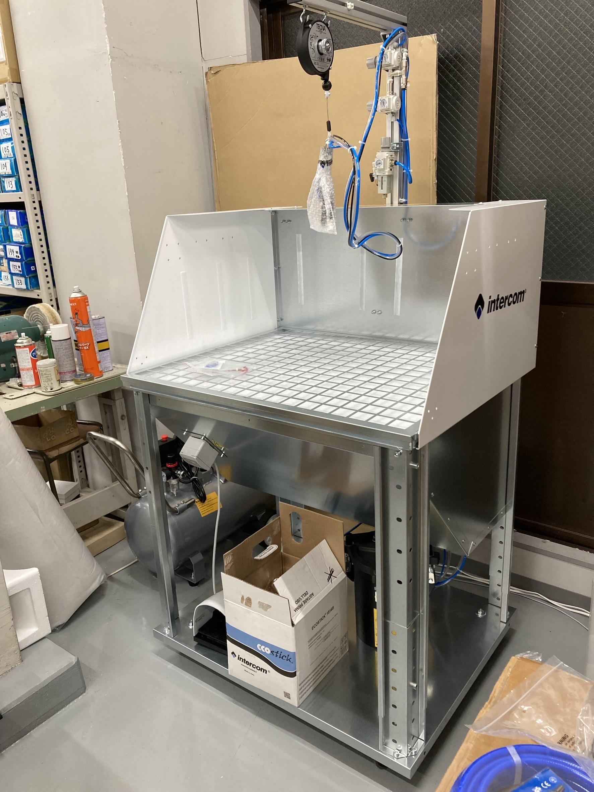
08Applica il collante in modo uniforme tramite nebulizzazione all'interno della cabina.
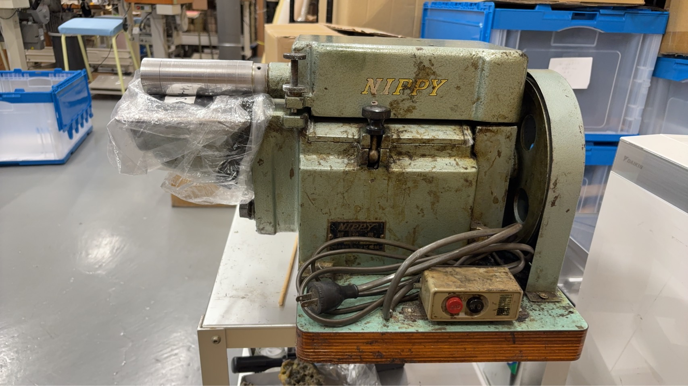
09Sistema a rulli per una preparazione all'incollaggio rapida e uniforme.
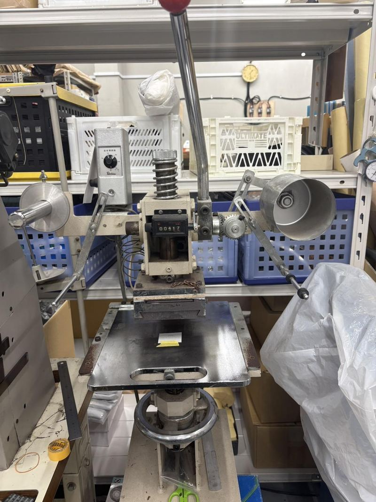
10Per loghi, incisioni e goffratura. Il controllo della temperatura garantisce la qualità dell'impressione.
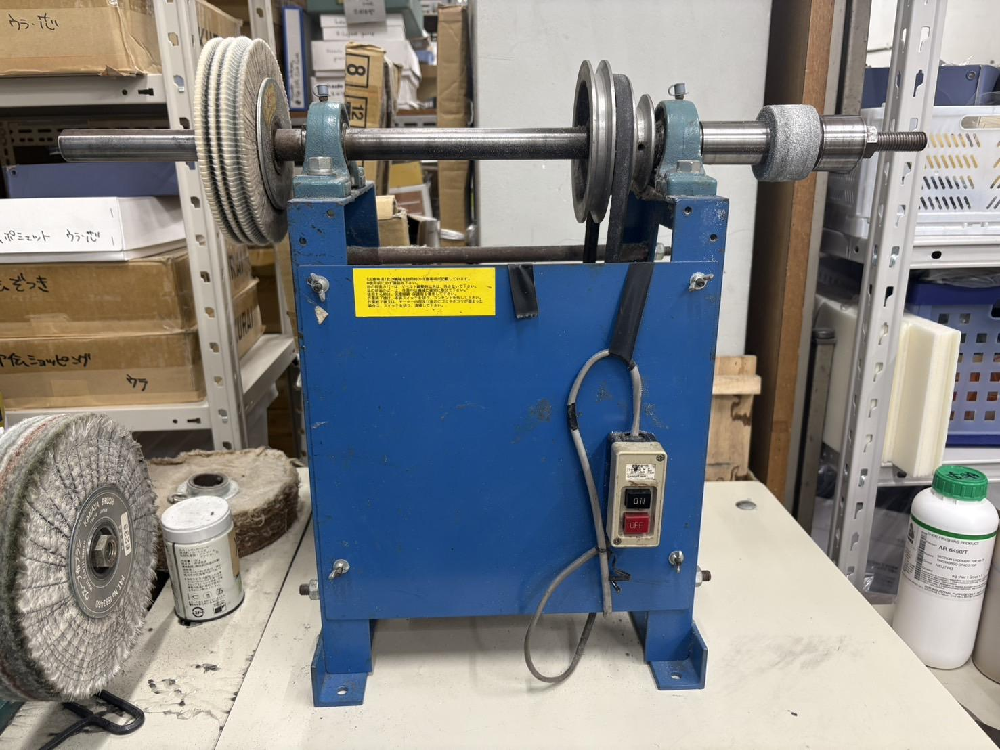
11Lucidatura dei bordi e finitura della superficie della pelle.
CONTACT
GET IN TOUCH→